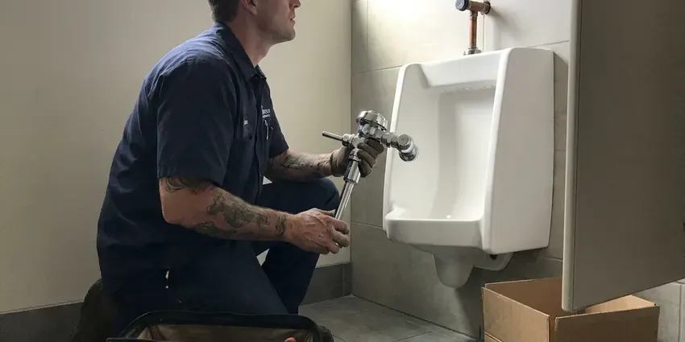

Shower Repair in Torrington, WY
From weak spray to leaks behind the tile, our plumbers track down and repair shower problems in homes throughout Torrington, WY.
- Diverter and Spout Repair
- Anti-Scald Stops Set
- Tub Protected During Work
- Workmanship Guarantee

Fix That Shower Drip in Torrington, WY
Our trucks carry common Moen and Delta cartridges.
Shower Repair in Torrington, WY
JKV Plumbing sees a lot of shower trouble in Torrington that starts below the surface. Expansive clay soils are common in parts of Wyoming, and their swelling and shrinking can crack foundations and shift buried pipes. That movement can crack a grout line or shift a drain joint just enough to let water under the pan, where it sits for months before a stain shows up. A moisture meter tells us fast.
Some of what we do:
- Shower Drain Clog Clearing
- Hot and Cold Balance Repair
- Dripping Shower Valve Repair

Additional Bathroom Plumbing Services in Torrington, WY
From toilets to showers, our bathroom plumbing team in Torrington, WY handles repairs, installs, and upgrades with tidy, code-compliant work.


Customers
Why Choose JKV Plumbing for Shower Repair in Torrington, WY?
Quick fixes come back. A plumber who replaces only the O-rings on a scored cartridge will be back in a few months, so we replace the whole cartridge with a genuine part and grease the valve body. The drip stays gone.
- Fair Pricing, The price covers parts and labor and does not change midway.
- Hidden Leak Checks, Moisture testing finds leaks behind tile before they spread.
- Licensed Plumbers, Our plumbers are licensed and insured and stay current on code.
Citywide Coverage
Wherever you are in Torrington, we can usually be there within a day. Leaks that are actively damaging a ceiling get moved to the front of the line, and we will tell you how to shut the water off while we are on the way. Do not wait on a ceiling stain.
Experienced Team
Licensed and insured, our plumbers have repaired thousands of showers. That experience shows in small things, like knowing a Delta Monitor cartridge needs its stops checked or that a Moen 1222 often comes out easier with a puller. Speed comes from repetition.
Safety-First Approach
Water off first, every time. We close the main or the shower stops and open the valve to drain the lines before the cartridge comes out, and if a stop will not hold, we shut the main. Then the drain gets covered.
Trusted Certified Torrington Plumbing Services Professionals
At JKV Plumbing, we take pride in licensed, certified plumbing services throughout Torrington, WY. Those papers on the wall mean something. Our plumbers hold recognized industry credentials, and they follow strict safety and quality rules on every repair, installation and maintenance call we run.
Call Us Now PHCC Plumbing Contractor Recognition
PHCC Plumbing Contractor Recognition Better Business Bureau (BBB) Accreditation
Better Business Bureau (BBB) Accreditation Angi Certified Pro
Angi Certified Pro ISO 9001 Quality Management Certification
ISO 9001 Quality Management CertificationShower Repairs We Handle in Torrington, WY
Slow Shower Drain Repair in Torrington, WY
Standing water at your ankles is the first sign. Hard water makes it worse, because the scale binds with soap scum and hair into a mat that sticks to the pipe wall and builds out over time. An auger cuts through it. Heavy buildup further down gets cleared with a water jetter instead of harsh chemicals.

Showerhead and Arm Leak Repair in Torrington
Shower arms leak at the threads more than people realize. A leak at the arm threads follows the pipe into the wall, and it shows up as bubbling paint in the next room. We reseal the threads. We can add a handheld or slide bar while we are there.
Mixing Valve Repair in Torrington
Mixing valves blend hot and cold inside the wall. Over time the cartridge or spool sticks, and you get a shower that will not stay at one temperature or a handle that turns past where it should before the water warms up. We replace the cartridge. If the valve is too old for parts, we talk through a replacement valve and what it means for the tile.
Low Shower Pressure Repair in Torrington, WY
Low pressure at the shower with good pressure at the sink narrows it down fast. With good pressure elsewhere, the problem is in the head, the restrictor or the cartridge, and that is typically a short repair. The head comes off first. If every fixture is weak, we check the regulator and the main.
Commercial Shower Service in Torrington
Hotels and dorms cannot wait days on a shower. With commercial cartridges on board, we fix rooms one at a time so the rest stay open. We can work nights. Each repaired valve gets its limit stop set and tested before we move on.
Showerhead Repair and Replacement in Torrington
Showerheads clog from the inside out. Scale builds behind the face plate and in the flow restrictor, so the spray goes uneven, shoots sideways or drops to a trickle even when the valve is wide open. A vinegar soak can work. Otherwise we put on a new head with rubber nozzles that rub clean with your thumb.
Same-Day Shower Leak Repair in Torrington, WY
Shut off the main first if water is getting where it should not. For a sudden wall leak or a valve that will not close, the main valve near the meter is the first move. Call us next. We stop the leak, make the repair or a safe temporary fix and check for anything that needs drying.

Emergency Shower Repair in Torrington, WY
A shower that will not shut off is an emergency. Close the main valve where the water line enters the house, or the shower's own stops if it has them behind an access panel. Next, call us. JKV Plumbing sends a plumber with cartridges on the truck, and we can often get your water back on within the hour.
Shower Plumbers Near Me in Torrington, WY
Searching shower repair near me in Torrington, WY usually means the drip is keeping you up. Same-day visits are common, and the plumber shows up with the usual cartridges on board. JKV Plumbing works all over town. Arrival windows are two hours.
On the day of the repair, a drop cloth goes in the tub and a towel over the drain so nothing small disappears. You get a flat price after we look, and every shower repair is backed by our workmanship guarantee. The tub is wiped down when we finish.
JKV Plumbing at a Glance
- Fully licensed plumbing team covering Torrington, WY
- Same-day appointments and 24/7 emergency response
- Clear written estimates, no hidden fees
- 4.9-star rated by 782+ Wyoming customers
Torrington Map
Torrington Information
- Population
- 6,212
- Area codes
- Local
- Service area
- Torrington and communities within 40 miles
- Nearby
- Ranchettes, Cheyenne, Douglas, Laramie
A water softener or filtration system is a popular upgrade for Wyoming homeowners dealing with scale and staining. A shower repair in Torrington, WY fixes the drip and checks the scald limit in one visit.
Talk to a Plumber
Call JKV Plumbing for honest, reliable plumbing from people who know the trade in Torrington, WY.
Our Specialized Plumbing Services in Torrington, WY
At JKV Plumbing, you get every kind of plumbing service from one company across Torrington, WY. From leak detection to full system installs, our team works fast and charges fair prices on homes and commercial properties alike. Explore our core services below:


How a Shower Repair Goes in Torrington, WY
Shower repair should be quick and clear. Here is how we do it.
Call and Describe
Call (307) 393-4049 and describe the drip, low pressure or temperature swing. You get a two-hour window.
Diagnose the Shower
We inspect the valve, diverter and drain and test for hidden leaks. You approve a flat price first.
Repair and Test
We replace worn parts and set anti-scald limits. Then we test pressure and temperature and check for leaks.
Frequently Asked Questions About Shower Repair in Torrington
Simple fixes run $100 to $250. A valve replacement typically costs $300 to $800, depending mostly on access and whether any tile needs to be removed. Access drives the price. We quote a flat number before starting.
That is a stuck or worn pressure-balance spool. The spool should shift when a toilet flushes, and a stuck one lets the temperature jump. A new cartridge usually fixes it.
Cartridge and showerhead swaps usually need no permit. Bigger work like moving pipes or a full remodel may need a permit under local rules. We tell you before we start.
It can, if the clog is past the trap. Deeper clogs can slow nearby sinks and gurgle the toilet, and severe ones can back water up through the lowest drain. Fix it early.
Most cartridge and diverter repairs take one to two hours. Leak repairs that require opening a wall or rebuilding a pan take longer.
Swapping the head, yes. Leave cartridges and tile leaks to a plumber.
Start with the showerhead. Mineral buildup in the head is the most common cause, followed by a clogged cartridge, a stuck pressure-balance spool or sediment in the water heater outlet. Each gets checked. If every tap is weak, we check the regulator.
Parts and labor are both covered. Our workmanship guarantee covers the repair, and the parts carry their own manufacturer warranty, with the exact terms written on your invoice. If the same problem comes back, we return.
What Our Customers Say About Our Plumbing Experts

Megan L.
Our upstairs tub drained so slowly that every shower turned into a bath. JKV Plumbing pulled a wad of hair out of the stopper and then snaked the line past the trap. Three months later it still drains fast.
Drain Cleaning · Ranchettes, WY
Tyler J.
We bought a taller comfort height toilet for my dad, who just had knee surgery. The plumber pulled the old one, found the flange was cracked, and replaced it before setting the new bowl. Took about two hours.
Toilet Installation · Torrington, WY
Kevin O.
Before buying our house I paid for a sewer camera inspection. JKV Plumbing found a belly in the line that held standing water about forty feet from the cleanout. We used the video to get the sellers to fix it before closing.
Sewer Camera Inspection · Laramie, WYCarlos V.
Our house still had galvanized pipe, and upstairs the shower was a trickle. The crew repiped everything in PEX over three days and patched every drywall hole before they left. The pressure difference is night and day.
Repiping · Torrington, WY
Brian W.
I smelled gas behind the dryer and called right away. The plumber found a corroded flex connector, replaced it, and pressure tested the whole line before turning the gas back on. He let me watch the gauge hold steady for fifteen minutes.
Gas Line Repair · Rawlins, WY
Patricia H.
We had a slab leak that two other companies could not find. JKV Plumbing located it in under an hour with a listening device. They rerouted the line through the attic instead of breaking up the floor, so we kept our kitchen tile.
Slab Leak Repair · Rawlins, WY